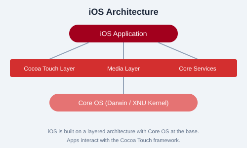
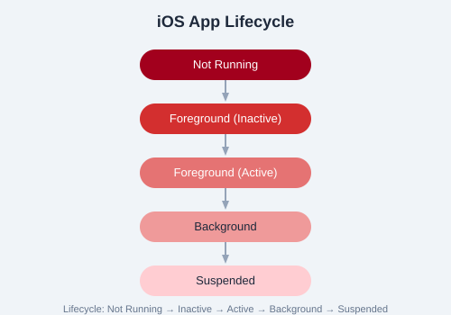

iOS is Apple's mobile operating system for iPhone, iPad, and iPod Touch. It powers over a billion devices and provides a rich ecosystem for app development using Swift and Objective-C. The iOS SDK includes Xcode, Interface Builder, Simulator, and a comprehensive set of frameworks like UIKit, Foundation, and Core Data.
iOS Architecture
iOS uses a layered architecture consisting of four abstraction layers:
Core OS Layer — XNU kernel, file system, networking, security, power management
Media Layer — Graphics (Core Graphics, OpenGL ES, Metal), Audio (AVFoundation), Video
Cocoa Touch Layer — UIKit, EventKit, MapKit, NotificationCenter, iAd

Figure: iOS layered architecture highlighting the four abstraction layers.
App Lifecycle
iOS apps transition through five distinct states: Not Running, Inactive, Active, Background, and Suspended. The UIApplicationDelegate protocol provides methods like applicationDidFinishLaunching:, applicationDidBecomeActive:, and applicationDidEnterBackground: to respond to state changes.

Figure: State transitions in the iOS app lifecycle.
Xcode Overview
Xcode is the official IDE for iOS development. It includes:
Source Editor — Code editing with syntax highlighting, autocomplete, refactoring
Interface Builder — Visual design of UI using storyboards and XIB files
Simulator — Test apps on virtual devices of various iPhone/iPad models
Instruments — Performance and memory profiling
Debugger — LLDB integration for debugging
Note: iOS development requires a Mac computer running macOS. Xcode is available free from the Mac App Store. You need an Apple Developer account ($99/year) to distribute apps on the App Store.
Swift vs Objective-C
Swift is Apple's modern programming language introduced in 2014. It is the recommended language for new iOS projects:
// Swift
let greeting = "Hello, iOS!"
print(greeting)
Practice Task: Download and install Xcode from the Mac App Store. Create a new "App" project using SwiftUI. Run the default template on the iPhone 15 Simulator. Observe the app's lifecycle by adding print statements in the AppDelegate lifecycle methods.